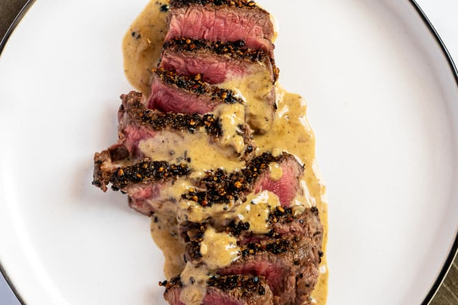

Steak au Poivre

A French classic.
Steak au poivre sound as if it would be difficult, but it is actually quite simple to prepare, and makes an easy and elegant meal.
Essentially it is a sauteed steak, with a quick pan sauce. This version made with black peppercorns tastes bright but not overpoweringly peppery or boozy.
If you serve it with scallion-mashed potatoes, your home cooked steak au poivre will put the best neighborhood bistro to shame.
Ingredients
- 4 tenderloin steaks, 6 to 8 oz each and no more than 1 1/2 inches thick
- Kosher salt
- 2 tablespoons whole black peppercorns
- 1 tablespoon unsalted butter
- 1 teaspoon olive oil
- 1/3 cup Cognac, plus 1 teaspoon
- 1 cup heavy cream
Steps
- Remove the steaks from the refrigerator for at least 30 minutes and up to 1 hour prior to cooking. Sprinkle all sides with salt.
- Coarsely crush the peppercorns with a mortar and pestle, the bottom of a cast iron skillet, or using a mallet and pie pan. Spread the peppercorns evenly onto a plate. Press the fillets, on both sides, into the pepper until it coats the surface. Set aside.
- In a medium skillet over medium heat, melt the butter and olive oil. As soon as the butter and oil begin to turn golden and smoke, gently place the steaks in the pan. For medium-rare, cook for 4 minutes on each side. Once done, remove the steaks to a plate, tent with foil and set aside. Pour off the excess fat but do not wipe or scrape the pan clean.
- Off of the heat, add 1/3 cup Cognac to the pan and carefully ignite the alcohol with a long match or firestick. Gently shake pan until the flames die. Return the pan to medium heat and add the cream. Bring the mixture to a boil and whisk until the sauce coats the back of a spoon, approximately 5 to 6 minutes. Add the teaspoon of Cognac and season, to taste, with salt. Add the steaks back to the pan, spoon the sauce over, and serve.